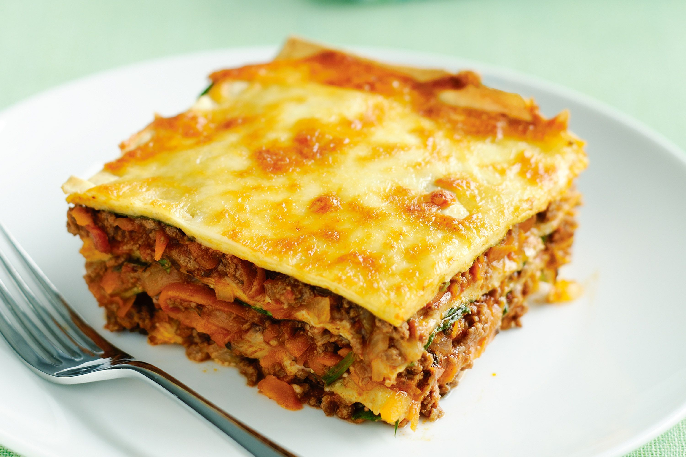

Lasagne

This recipe is adapted from the official lasagne by the Bolognese Chamber
of Commerce, with a few tweaks inspired by locals—adjusting the meat, wine,
and whether to add milk. One non-negotiable: Green lasagne sheets are essential.
The ragù is simple, with no garlic, herbs, or spices. Fresh pasta eliminates the
need for pre-boiling.
Ingredients
- 2 tsp olive oil
- 1 medium brown onion, finely chopped
- 2 garlic cloves, crushed
- 600g lean beef mince
- 1 carrot, peeled, grated
- 2 tbsp no added salt tomato paste
- 400g can diced tomatoes
- 1/4 cup chopped fresh oregano leaves
- 1 quantity Fresh wholemeal pasta (see related recipe)
- 60g baby spinach leaves
- 1 1/3 cups grated light mozzarella cheese
Steps
-
Heat oil in a saucepan over medium heat. Add onion and garlic. Cook, stirring
occasionally, for 3 to 4 minutes or until softened. Increase heat to medium-high.
Add mince. Cook, stirring with a wooden spoon to break up mince, for 5 minutes or until browned.
-
Add carrot and tomato paste to mince mixture. Stir to combine. Add tomato, oregano
and 1/4 cup cold water. Bring to the boil. Reduce heat to low. Simmer for 30 minutes
or until sauce has thickened. Season with salt and pepper.
-
Preheat oven to 180°C/160°C fan-forced. Meanwhile, make pasta (see related recipe),
trimming sheets to make eight 20cm x 10cm pieces. Lightly grease a 6cm-deep, 20cm square
ceramic baking dish. Arrange 2 pieces of pasta over base of dish. Spread one-third of the
mince mixture over pasta. Top with one-third of the spinach. Top with 2 pasta pieces. Sprinkle with 1/3 cup cheese.
-
Top with half the remaining mince and half the remaining spinach. Top with 2 pasta pieces.
Sprinkle with 1/3 cup cheese. Repeat with remaining mince and spinach. Finish with 2 pasta pieces
and remaining cheese. Bake for 30 to 40 minutes or until cheese is golden and melted. Stand for 10 minutes. Serve.
Home